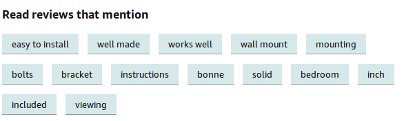

10.3 Keyphrase Extraction
Find the phrases that name what a document is about.
1. The job
A product on Amazon can have a hundred reviews. Nobody reads all of them. Amazon's "Read reviews that mention" filter is keyphrase extraction (KPE): find short phrases that many reviewers actually used, then let the shopper click one.

KPE is the lightest IE task from note 10.2. The output is a ranked list of phrases, not a knowledge graph.
2. Supervised or unsupervised
There are two research families.
Supervised. You need documents paired with gold keyphrases. Then you train a classifier or a sequence model on engineered features or a network. Labeling is slow and expensive. A model trained on scientific abstracts will not automatically work on tweets.
Unsupervised. No phrase-level labels. The method is mostly domain-agnostic. This is what people ship. Recent comparisons have often found that deep supervised KPE does not beat a good unsupervised graph method once you count labeling cost.
In production, start unsupervised. Add a short heuristic list for your domain if you have one.
3. Graph-based KPE
The popular unsupervised algorithms share one picture.
- Turn candidate words and phrases into nodes.
- Put a weighted edge between nodes that co-occur (same sentence or a sliding window).
- Score each node by how well connected it is to the rest of the graph (a PageRank-style walk).
- Return the top (N) nodes as keyphrases.
A good keyphrase is frequent enough and tied to different parts of the text. A word that appears ten times in one paragraph and nowhere else is a local echo, not a theme.
Algorithms differ in two places: how they pick candidates, and how they score the graph. Two you will see in code:
| Method | Idea |
|---|---|
| TextRank | Rank words like web pages; nearby words vote for each other |
| SGRank | Mix statistical cues (position, frequency) with the graph score |
4. A small implementation
textacy sits on spaCy. Load English, read a document, then ask for keyterms.
import spacy
import textacy
nlp = spacy.load("en_core_web_sm")
doc = textacy.make_spacy_doc(open("nlphistory.txt").read(), lang=nlp)
textacy.extract.keyterms.textrank(doc, topn=10)
textacy.extract.keyterms.sgrank(doc, topn=10)
On a short history of NLP, TextRank tends to return long noun phrases (statistical machine translation system). SGRank can mix those with shorter, noisier terms (early, world). Always look at the list. Do not trust the default topn.
Overlapping phrases are common: natural language processing system and natural language system. textacy.extract.utils.aggregate_term_variants groups variants so you can keep one phrase per group.
5. Practical advice
Graph methods misbehave in predictable ways.
Document length. Building every n-gram and a graph for a 50-page PDF is slow and noisy. A common fix is to use the first (M\%) and the last (N\%) of the text. Introductions and conclusions usually state the point.
Overlap. Each phrase is ranked on its own, so buy back stock and buy back both survive. Drop near-duplicates with cosine similarity, or use the variant-aggregation helper above.
Ugly patterns. A keyphrase that starts with a preposition is rarely what you wanted. Filter those patterns after scoring. That is cheaper than retraining.
Bad text extraction. KPE cares about sentence boundaries. A PDF or a scan that glues two columns together will invent phrases that never appeared. Clean the text first; post-process the phrase list second.
A custom stack that works in projects: one graph algorithm, plus a short domain stop-list, plus a post-filter for overlap and junk patterns.
6. Practice
-
Why might unsupervised KPE beat a supervised deep model on a new product category?
-
You extract both battery life and long battery life. What do you do before you show the list to a user?
-
A 40-page report yields 200 candidates and a slow graph. What cheaper input would you try first?